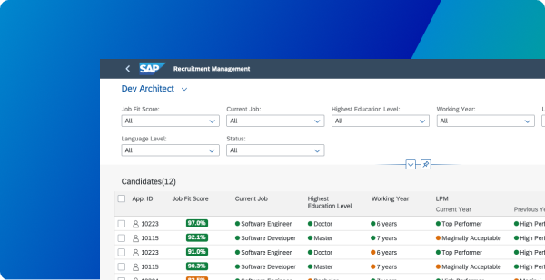
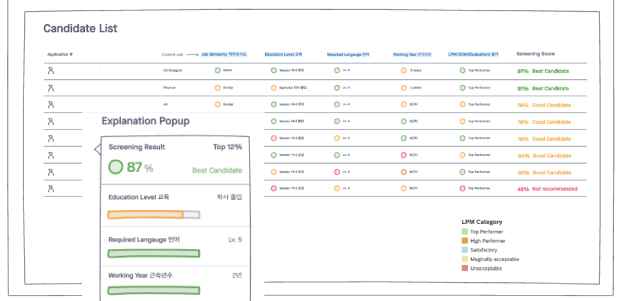
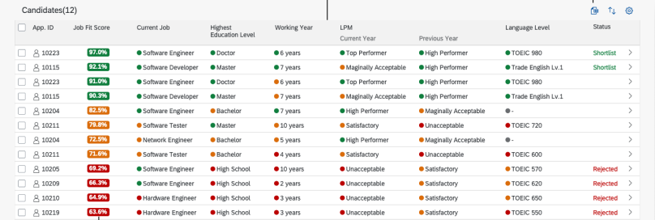
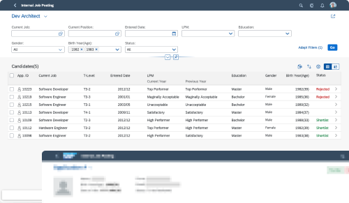
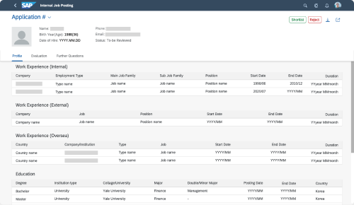

Doosan was losing experienced employees and overspending on external hiring. Built on SAP BTP and integrated with SAP SuccessFactors, this platform uses machine learning to boost internal mobility, streamline recruiter screening and support self-directed careers for millennial and Gen Z employees.

92% of employees who left did so for career development, and 37% left within three years of an internal transfer.
I brought all stakeholders together to align on the as-is internal recruitment process, conceptualize the to-be screen flows, and draw up action plans — producing a use-case diagram, key screen flows and an action plan.
With the dev team, ML engineers, data scientists and the client's IT team, I framed the data questions: what data recruiters already use, where it lives in the HR system and in what format, how much history is realistic, and which data must be visible and explainable in the UI.
Because there was not yet enough labeled data to justify every recommendation, the first model was built on legacy HR records, with an architecture integrating the legacy system, SAP SuccessFactors and SAP Data Intelligence on SAP BTP.
Sketches validated with users moved from an SAP SuccessFactors-based flow, to customizable applicant data entry, to ML insights that give recruiters a faster, insightful first screen.

An AI-enhanced candidate list built with SAP Fiori 3.0: switch between job requisitions, refine with a filter bar, read color-coded indicators for each criterion, compare in a table, and see each application's suitability at a glance.



The project scaled into an independent service: Peoply, a cloud SaaS solution built on SAP BTP and SAP SuccessFactors.
“It was a great opportunity to experience the whole process of human-centered design, development and collaboration for an AI-powered HR product. It was a delightful experience as an SAP developer thanks to the strong backup of Earl's UX team.”
“In a global collaboration with Doosan, we developed a use case along SAP's Human-Centered Approach to Innovation. I really enjoyed working together with Earl's team and Doosan IT.”